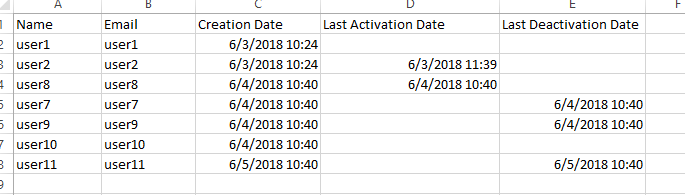
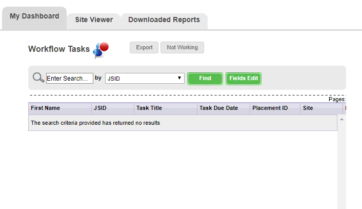

THE SQL SCRIPT
The next data are showed in this script
The script was fixed with the corrections that you mention in the email

SET @date_start = '1528072808', @date_end = '1528159208';
SELECT
CONCAT(usr.first_name, ' ', usr.last_name) as 'User Name',
usr.email,
(
SELECT DATE_FORMAT(FROM_UNIXTIME(uehcd.ueh_datetime), '%Y-%m-%d %H:%i:%s')
FROM ig_user_enable_history uehcd
WHERE uehcd.ueh_event_id = 1
AND uehcd.user_id = uehmain.user_id
GROUP BY uehcd.user_id
)AS 'Creation Date',
CASE
WHEN uehmain.ueh_event_id IN (2)
THEN DATE_FORMAT(FROM_UNIXTIME(uehmain.ueh_datetime), '%Y-%m-%d %H:%i:%s')
ELSE NULL END AS 'Last Activation Date',
CASE
WHEN uehmain.ueh_event_id IN (3,4)
THEN DATE_FORMAT(FROM_UNIXTIME(uehmain.ueh_datetime), '%Y-%m-%d %H:%i:%s')
ELSE NULL END AS 'Last Desactivation Date'
FROM
ig_user_enable_history uehmain LEFT JOIN ig_users usr ON uehmain.user_id = usr.user_id
WHERE
uehmain.ueh_id IN (
SELECT ueh_id
FROM ig_user_enable_history
WHERE ueh_event_id IN (1,2) AND ueh_datetime < @date_start
UNION
SELECT ueh_id
FROM ig_user_enable_history
WHERE ueh_event_id IN (1,2) AND ueh_datetime < @date_end
UNION
SELECT ueh_id
FROM ig_user_enable_history
WHERE ueh_event_id IN (1,2,3,4)
AND ueh_datetime >= @date_start AND ueh_datetime <= @date_end)
AND
uehmain.ueh_id IN(SELECT MAX(ig_user_enable_history.ueh_id) FROM ig_user_enable_history GROUP BY ig_user_enable_history.user_id)
SOME QUESTIONS
-
When a user is deleted within the range, it doesn't exist data like User Name and Email to show in the Report
This user must be shown with User Name and Email null or empty in the report?
-
What is the exact path where these report files should be generated?
-
And the last one is: What is the 'Dashboard project'?
I found this screen about Dashboard but I'm not sure
